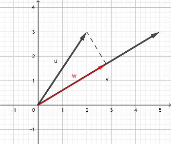

On this page, you will learn to:
- Compute the dot and cross product of two vectors.
- Compute the projection of one vector onto another.
- Solve applications involving the dot product.
We have already looked at the basic vector operations of addition, subtraction, and scalar multiplication. Now, we want to look at a way to multiplying vectors. There are two primary ways that we can do this, which may seem odd. We will start by looking at what is called the dot product now, and then we will look at the other method called the cross product in the next lesson.
The vector dot product is probably the most obvious method of multiplying vectors, i.e. we multiply the corresponding components like we did with addition and subtraction. However, there is a little twist. Once we multiply the components, we also add up the resulting values. This means that a dot product results in a scalar quantity, not another vector.
We define the dot product of two vectors \(\vec{u} = \langle u_1,u_2,u_3 \rangle \) and \(\vec{v} = \langle v_1,v_2,v_3 \rangle \) as follows.
\[\vec{u} \cdot \vec{v} = u_1 v_1 + u_2 v_2 + u_3 v_3 \]The dot product has the following properties given vectors \(\vec{u}\), \(\vec{v}\) and \(\vec{w}\) and a scalar \(c\).
| Property | Operation |
|---|---|
| Commutative | \[\vec{u} \cdot \vec{v} = \vec{v} \cdot \vec{u}\] |
| Associative (scalar) | \[c(\vec{u} \cdot \vec{v}) = (c\vec{u}) \cdot \vec{v}\] or \[c(\vec{u} \cdot \vec{v}) = \vec{u} \cdot (c\vec{v})\] |
| Distributive (vector) | \[\vec{u} \cdot (\vec{v} + \vec{w}) = \vec{u} \cdot \vec{v} + \vec{u} \cdot \vec{w}\] |
| Magnitude | \[\vec{u} \cdot \vec{u} = |\vec{u}|^2\] |
To understand what the dot product represents geometrically, we can consider the following theorem that connects the dot product of two vectors to the angle formed by the vectors.
If \(\vec{u}\) and \(\vec{v}\) are two vectors and \(\theta\) is the angle between them, where \(0 \le \theta \le \pi\), then we can equate the vector dot product with the angle using the following equation.
\[\vec{u} \cdot \vec{v} = |\vec{u}| |\vec{v}| \cos \theta\]If the vectors \(\vec{u}\) and \(\vec{v}\) are parallel and point in the same, then \(\vec{u} \cdot \vec{v} = |\vec{u}||\vec{v}|\). If the vectors are orthogonal (or perpendicular), then \(\vec{u} \cdot \vec{v} = 0\). And if the vectors are parallel but point in opposite directions, then \(\vec{u} \cdot \vec{v} = -|\vec{u}||\vec{v}|\). If the vectors are neither parallel nor perpendicular, then the value of the dot product will bounded by the product of their magnitudes. In other words, \(-|\vec{u}||\vec{v}| \le \vec{u} \cdot \vec{v} \le |\vec{u}||\vec{v}|\).
Using this alternate formula for the dot product, we get a few more properties for the dot product.
- If \(\vec{u} = \vec{0}\) or \(\vec{v} = \vec{0}\), then \(\vec{u} \cdot \vec{v} = 0\) and \(\theta\) is undefined.
- The vectors \(\vec{u}\) and \(\vec{v}\) are parallel (meaning \(\theta = 0\) or \(\theta = \pi\)) if and only if \(\vec{u} \cdot \vec{v} = \pm |\vec{u}||\vec{v}|\).
- The vectors \(\vec{u}\) and \(\vec{v}\) are perpendicular (meaning \(\theta = \frac{\pi}{2}\)) if and only if \(\vec{u} \cdot \vec{v} = 0\).
The following examples demonstrate how we can algebraically compute the dot product of two given vectors and how the result compares to the angle between them.
Orthogonal Projections
Sometimes we need to know how much of one vector points in the direction of another vector. We call this an orthogonal projection of one vector onto another vector. For example, the projection of any vector \(\vec{v} = \langle a,b \rangle\) onto the unit vector \(\mathbf{i}\) (which corresponds to the \(x\)-axis) would result in the component vector \(\langle a,0 \rangle\). Similarly, projecting \(\vec{v} = \langle a,b \rangle\) on the the unit vector \(\mathbf{j}\) (which corresponds to the \(y\)-axis) would result in the component vector \(\langle 0,b \rangle\). But we can project a vector onto any vector, not just \(\mathbf{i}\) and \(\mathbf{j}\).
We see two vectors, \(\vec{u} = \langle 2,3 \rangle\) and \(\vec{v} = \langle 5,3 \rangle\), in the illustration below. The red vector \(\vec{w}\) represents the projection of \(\vec{u}\) onto \(\vec{v}\). It is almost like vector \(w\) is the component of \(\vec{u}\) in the direction of \(\vec{v}\).

So, in general, how do we find the orthogonal projection of one vector onto another? In the illustration above, notice that we can form a right triangle by extending a line segment from the terminal point of the projected vector to the vector being projected onto. Using right-triangle trigonometry, we get the following relationship.
\[\cos\theta = \frac{|\vec{w}|}{|\vec{u}|}\]Rewriting this equation, we get that the magnitude of the projection can be expressed by \(|\vec{w}| = |\vec{u}|\cos\theta\). If we apply the above dot product equation for vectors \(\vec{u}\) and \(\vec{v}\) to solve for \(\cos\theta\), then we can substitute the result in this equation, which gives us the following.
\[ \begin{aligned} |\vec{w}| &= |\vec{u}|\cos\theta \\ &= |\vec{u}| \left(\frac{\vec{u} \cdot \vec{v}}{|\vec{u}||\vec{v}|}\right) \\ &= \frac{\vec{u} \cdot \vec{v}}{|\vec{v}|} \end{aligned} \]Now that we have the magnitude of the projection, we can find its direction by computing the unit vector of \(\vec{v}\), which is \(\frac{\vec{v}}{|\vec{v}|}\). Then, if multiply this unit vector by the magnitude of the projection, we will get the vector of the projection, having both magnitude and direction now.
\[ \begin{aligned} \vec{w} &= |\vec{w}|\frac{\vec{v}}{|\vec{v}|} \\ &= \left(\frac{\vec{u} \cdot \vec{v}}{|\vec{v}|}\right)\frac{\vec{v}}{|\vec{v}|} \\ &= \left(\frac{\vec{u} \cdot \vec{v}}{|\vec{v}|^2}\right)\vec{v} \\ &= \frac{\vec{u} \cdot \vec{v}}{\vec{v} \cdot \vec{v}} \vec{v} \end{aligned} \]The orthogonal projection of \(\vec{u}\) onto \(\vec{v}\) is the part of \(\vec{u}\) that is in the direction of \(\vec{v}\), and it can be computed using the following formula.
\[\text{proj}_\vec{v} \vec{u} = \frac{\vec{u} \cdot \vec{v}}{\vec{v} \cdot \vec{v}} \vec{v}\]The magnitude of this projection is called the scalar component of \(\vec{u}\) in the direction of \(\vec{v}\), and it can be computed using the following formula.
\[\text{scal}_\vec{v} \vec{u} = \frac{\vec{u} \cdot \vec{v}}{|\vec{v}|}\]The following videos demonstrate how to compute orthogonal projections algebraically and illustrates what they represent graphically.
Applications
We often use dot projects when dealing with vectors that need to be parallel or perpendicular (orthogonal) to each other. The following video gives an example.
Probably the most common application of the vector dot product deals with force and work. If you remember your physics, we can desribe the work done moving an object a distance \(d\) by applying a constant force \(F\) in the direction of the motion as \(W = Fd\). Well, what if the force is not applied in the same direction as the movement of the object? We would need to determine how much of the force is parallel to the direction of motion, which is where the projection comes into play.
The amount of work \(\vec{W}\) done by a force \(\vec{F}\) along a distance \(\vec{d}\) is given by the following dot product.
\[\vec{W} = \vec{F} \cdot \vec{d} = \left| \text{proj}_{\vec{d}} \vec{F} \right| |\vec{d}|\]